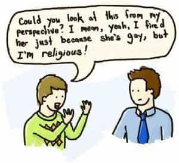

< < < Back
Why Liberalism Is Just Passive-Aggressive Totalitarianism – Return Of Kings
Greetings to the men of ROK this week. As a brief note, I’ll say that I’ve posted two articles at my blog: one is about the attitude that a traditional man should take to churches and clerics who oppose the restoration of red-pilled, patriarchal values in society (with an emphasis on the Catholic Church); the other, in honor of the end of the month of May, our Lady’s month, presents some of the Catholic teaching on the Blessed Virgin – a misunderstood topic, for many. Navigate there if you care to.
I wanted to respond to some ideas that came up regarding last week’s article—specifically, some men chafed at the idea that an hierarchical, aristocratic state that emphasized virtue, was not sufficiently deferent to the special nature of their snowflakery (I tease, fellas), and would threaten to trample upon their rights. This is a common idea, even amongst people who think they have rejected egalitarianism; they admit not all men are equal, but they are very keen to say “don’t inflict your morals on me,” thinking their morals are just as equal (maybe even more equal!) than others’. Today we will look at why this, too, is one more impossible vision from the Liberal House of Mirrors.
The Essence of Liberalism
Let me first state that any philosophy allowing for rights in abstraction from the norms of objective morality, is Liberal—and this includes almost all of what calls itself “Conservatism” in the Anglosphere (and, increasingly, beyond). At the heart of Liberalism, aka Modernism (in the technical terms used by Catholics such as myself), is the incoherent and irrational endowing of error with rights, often consequent to an incorrect valuation and application of the good of tolerance.
The first manifestation of this new philosophy in the West was Protestantism, which as Don Felix Sarda y Salvany said, “begets by nature tolerance of error.” I do not say this to be offensive, but descriptive; it was the first manifestation of the feeling that men are entitled to their own opinions on ultimate questions, and ought to be “free” to act in accord with their conscience on these opinions—and that, therefore, authority must yield more or less to individuals’ rights of conscience.
Concepts as Flawed and Broken as the Bell that Stands for Them
One can see that there is essentially no difference between this and the maxim of Justice Kennedy, which he penned to uphold worthless whores’ rights to murder their children without so much as notifying their husbands, the fathers: “At the heart of liberty is the right to define one’s own concept of existence, of meaning, of the universe, and of the mystery of human life.” I spit upon such damned nonsense; this is literally a carte blanche to do whatever the hell you want. The story of Western Civilization from about 1500 A.D. to the present, is the story of how this absurd idea has played out in successive waves of incoherence and irrationality.
The only limit on this “right to define one’s own concept of existence” is the flimsy protestation that “your rights end where mine begin,” or, put otherwise: “don’t inflict your morality on me!” This sounds good to the person who has not analyzed it critically, but in fact it is a complete impossibility. We all live together in society. Any view that one enshrines as the societal ideal is automatically and inevitably going to inflict itself upon everybody in that society, and will frustrate or contradict their own “concept of existence,” to some extent.
Indeed, it is a wildly tyrannical idea, because it is tantamount to saying that everyone who does not consider their concept of existence to be totally private, relative and arbitrary, has no right to implement their views in society. Yes, as we see, even Libertarianism advances this radically hegemonic principle, squelching all opinions and beliefs that reject the relativistic premise. For, even to advocate that one should not inflict his moral views on someone else, is already an attempt to inflict one’s moral views on someone else! And in the absence of an objective norm of morality, there is really nothing stopping the Supreme Court from interpreting the Constitution to mean that your right not to bake cakes for sodomites, ends where a sodomite’s right to demand cakes of you begins. That this is even an issue, is proof of the absurdity of our system.
But please do convert to my secular religion, abandon all hope of living in a society oriented by sane principles, and prepare to subsidize all the things I don’t want to hear your opinions on.
What is Truly Right, is Inevitably Annihilated by Pseudo-Rights
I, for example, believe that there are objective principles of morality, and a moral and rational role for the state; I believe it is absolutely right and just and salutary for society to be run on these principles, and that this means making definite judgments upon certain ideas and behaviors, “inflicting” this system upon everybody. I also believe that I am morally obliged to prefer this system of governance, and to reject a Liberal one.
The Liberal, Libertarian or “Conservative” will recoil in horror; but, they are reacting to the mere candor of my position. The fact, is that their viewpoints also require me to shut up, forsake my dearest religious and moral principles, and submit to a society organized along their preferred principles, which I know to be not only immoral, but also impossible and irrational.
When members of society install a form of specious relativism as their governing principle, they are inflicting their moral view upon me. They limit the scope of my social and moral action; they compel my submission to what they accomplish via their appeal to the mob; they shackle me to the moral drift and societal decline of a state piloted by the demagogued masses. They are denying my moral view that a just, rational and even divine social order should reign over society, and that, far from according “power to the people,”
I should hold the uninformed dissent of infidels and fools in contempt, regarding this latter as the infallible source of civilizational decadence. If they succeed in preventing me from implementing my moral vision and living in the society I would form for myself and others, they have succeeded in inflicting their moral vision upon me. They have nullified my moral and social aspirations. They have compelled me to live in a State where a chimerical relativism bulldozes my sublimer views without scruple.
An House Divided

Or, put another way: people who say they believe in equality and freedom have determined that my beliefs are not equal to theirs, I am not free to run my business and spend my money as I wish, nor can I associate with whom I wish, nor can I simply be left alone; in the name of freedom and equality, they will inflict their morality on me, precisely on the grounds that I mustn’t inflict my morality on them.
This conflict splits Liberalism down the middle: on the one hand, you have neo-Liberals claiming that people have a right to goods and services such as healthcare, because you can’t exercise your other “rights” or really be “free,” unless the government gives you a house, food, health care and Wi-Fi. They still pay lip service to the “your rights end where mine begin” view, but it’s obvious they now believe that anything that may be necessary to guarantee the more important rights, can plausibly be asserted as something to which one is entitled.
On the other hand, the sorry few who still cling to Classical Liberalism (Libertarians, some “Conservatives”), are futilely trying to keep the barque of negative rights afloat. They will say, for instance, that you don’t have a right to free health care, because this would mean you have a right to compel others to provide you with a service. They take this as a general principle – you don’t have a right to make other people provide you with the substance of your rights; your rights end where the rights of others begin—“don’t inflict your morality on me!”—but, unlike neo-Liberals, Classical Liberals “really mean it.”
The Only Sane Solution
But I answer that this principle is also incorrect. I believe in the right to due process, for example, and this requires that the State provide competent law enforcement, a judiciary, equitable processes for jury selection and compensation, etc., etc. I believe that the King(/State) has a duty to provide just laws and to govern justly. It is NOT a universal rule that I have no right to receive provision of goods or services from the State; the reason I am not entitled to free health care, is because it does not belong to the State to provide my health care, and it is not right for me to force others to do so, either. The lesson to be drawn, is that real justice cannot exist in an (impossible) neutrality or compromise between “equal yet opposite,” mutually valid yet contradictory worldviews.
Rather than pretend that “neutrality” is actually neutral, the state’s governance and justice must be rooted in what is Right, and in that alone. You may object: “but who determines what that is?” We’ll explore this in future, but for now, suffice it to say that the objection solves nothing: even to determine that we must not determine this, is to determine it.
The Non-Aggression Principle, or Declining to Initiate Force, makes sense only if infractions against objective norms of morality are understood to be initiations of force. Without a unified acknowledgment of said norms, the government can easily justify its protection of any kind of outrage, and its persecution of any kind of necessary intervention or prohibition. The “family” in this picture, above, was celebrated for pioneering gay “rights;” then they pimped their adopted son out to a global pedophilia ring. This was one step too far… for now. Tomorrow, when society recognizes the “right” of children to consent to sex – they already “consent” to sex change operations, no? – the police who arrested these men will be unjust aggressors, and the “family” will be persecuted for having “their own concept of existence.”
That’s the heart of all this. Since we no longer believe that the only basis of rights is objective uprightness, and since we no longer orient our society towards this (allowing the masses, instead, to simply assert their whimsies as “rights”), and since we have founded a society based on the irrational attempt to accord rights to this tangled abyss of error, we are doomed to pretend that we are not inflicting ourselves on each other, despite the fact that any set of social norms—even the norm of pretending to reject norms—inevitably inflicts itself upon everyone. Unless we repent, this already bitter crisis will keep playing out to the bitter, bitter, bitterest end.
I used to think people would wake up. Yet most still seem oblivious to the manifest inevitability of “inflicting a view,” despite the steadily escalating clash of moral inflictions in the name of forbidding moral inflictions over five centuries. This has now entered a critical stage, because, having moved on from disagreement about less obvious points like the Trinity and Papal Primacy, sane people are now being asked to acquiesce even to palpably absurd ideas: collusion in sodomy = holy matrimony; Bruce Jenner = woman; up = down; square = circle.
The only thing for it, is to stop worrying about inflicting “a” view, and to start worrying about inflicting the right one. Until men with just convictions no longer fear to take up the sword of a righteous authority, and to smite those who demand the right to dissent from justice and just authority, the West will continue to tear itself apart with a specious and manifestly prevaricating, passive-aggressive, intolerant “tolerance.”
“Know you not that the unjust shall not possess the kingdom of God? Do not err: neither fornicators, nor idolaters, nor adulterers, Nor the effeminate, nor liers with mankind, nor thieves, nor covetous, nor drunkards, nor railers, nor extortioners, shall possess the kingdom of God” (1 Corinthians 6:9). And if an earthly king is smart, such persons shouldn’t last long in his kingdom, either.
God save you, men.
Read More: 9 Secrets About Female Nature Told By A Hot Girl Who Was Dying Of Cancer